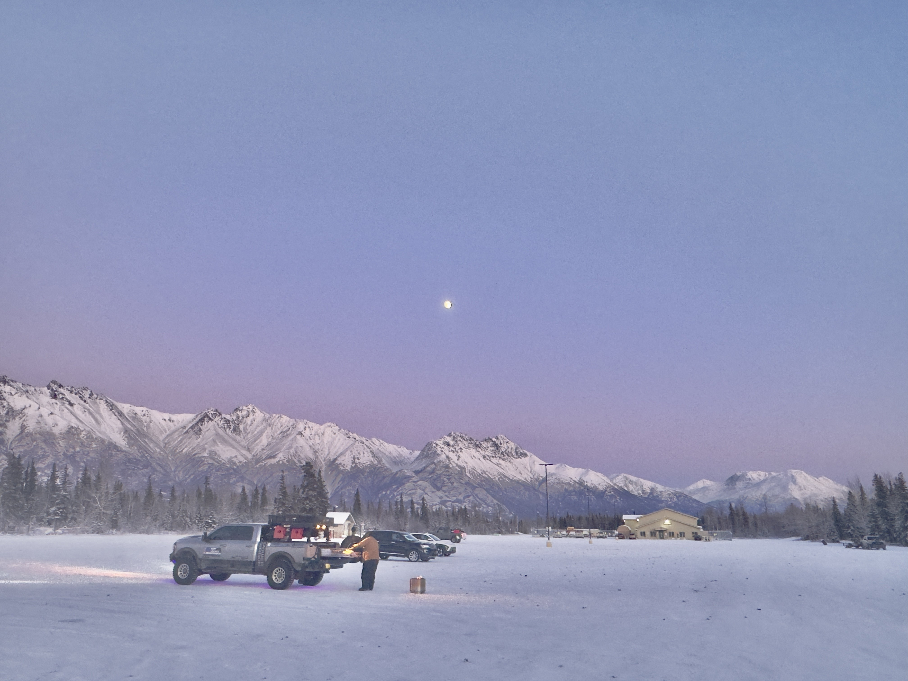

About

I'm currently a full-time Research Assistant at the Multimedia Technology Lab, Institute of Information Science, Academia Sinica, supervised by Dr. Chien-Yao Wang. My current research focuses on 3D neuron segmentation for confocal microscopy images — building pipelines to identify and delineate distinct neuronal structures in volumetric data.
Prior to this, I served as a part-time Research Assistant at the Center of Geographic Information Science, RCHSS, Academia Sinica (2023–2026), supervised by Dr. Ta-Chien Chan. My work there spanned spatiotemporal statistical analysis, GeoCV (applying YOLO and line-detection models to historical maps), and developing QGIS plugins — one of which, Dynamic Flow, has reached ~2,000 downloads.
My research interests lie in the cross-domain application of machine learning and computer vision: generative models for image & video synthesis, medical image segmentation, and geographic computer vision.
Education
Boston University
Master of Data Science
Tamkang University
Bachelor of Statistics
Technical Skills
Programming
ML / DL
Tools & Infra
Publications
Application of Deep Learning for Symbol Detection on Historical Maps to Explore Spatiotemporal Changes in the Regional Tea Industry of Early 20th-Century Taiwan
Digital Scholarship in the Humanities, 2025
Effect of Urban Greenness and Air Pollution on Asthma Visits Among Children and Adolescents in an Industrial and Non-Industrial City
(Under Review)
Projects
QGIS Plugin · 2023 – 2026
Dynamic Flow
Integrated 3D Gradient Approach, GWR, GTWR, and GWQR spatial statistical algorithms directly into the QGIS graphical interface, making advanced geospatial analysis accessible to researchers without custom scripting. The plugin has accumulated ~2,000 downloads on the official QGIS plugin repository.
Hackathon · Jun 2024
Educational Resources Recommendation Website
Built a website that generates personalized learning roadmaps from user-supplied keywords using the OpenAI API, then recommends relevant open online resources. Developed with React; designed the database system and recommendation algorithm factoring course relevance and user reviews.
Contact

Alaska · Blue Hour · Dec 2025I'm always open to discussing research collaborations, PhD opportunities, or interesting projects in computer vision and machine learning. Feel free to reach out — I try to respond within a day or two.